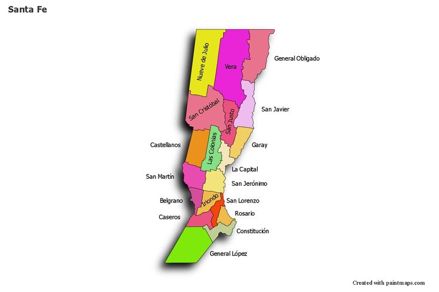
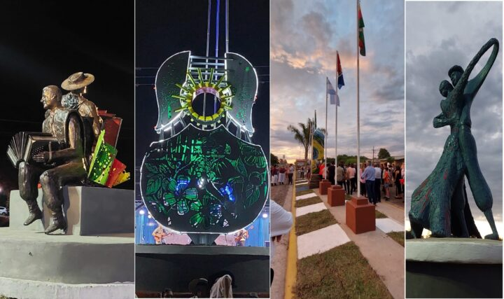
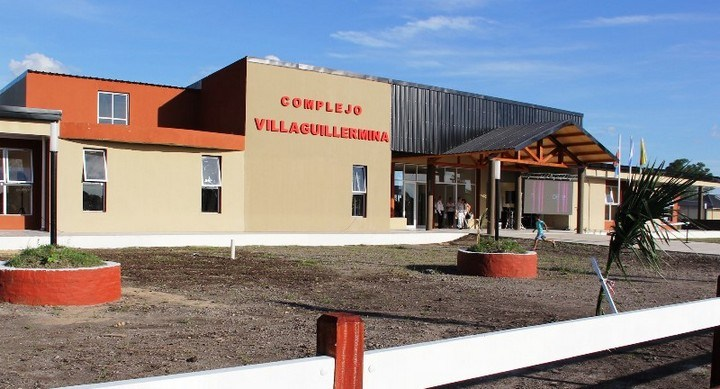
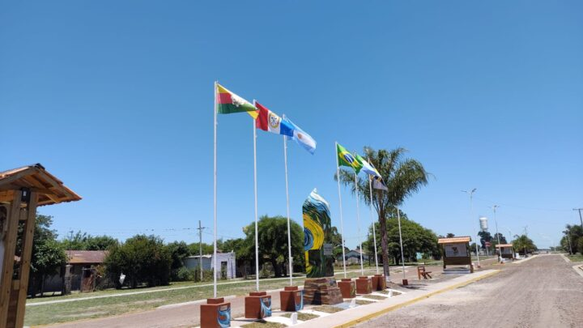
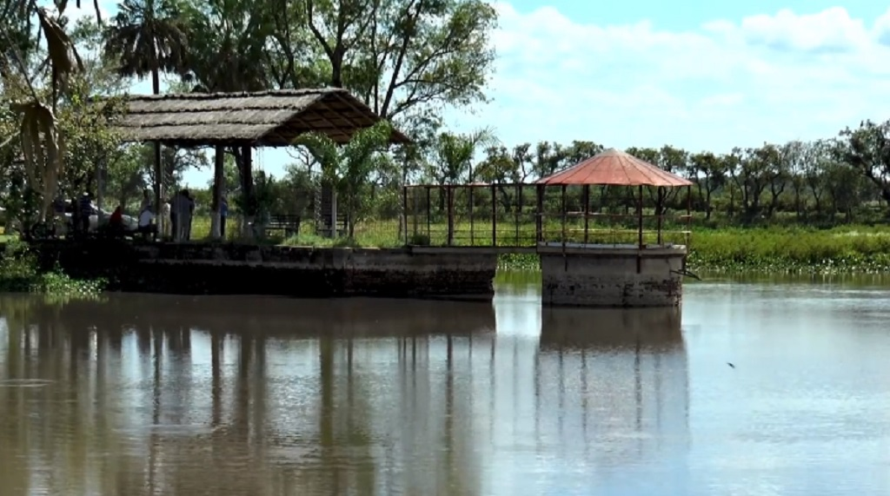
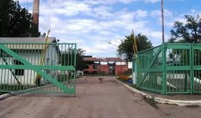

Pagina dedicada al turismo y paisajes de Villa Guillermina, pueblo de la forestal.
Villa Guillermina es una comuna ubicada en el Noreste de la provincia de Santa Fe, en el departamento General Obligado, a 471 km de la capital provincial. Fue fundada el 12 de octubre de 1904 por la empresa “La Forestal”. Su nombre hace honor a la esposa de Don Harteneck, director de La Forestal.

VILLA GUILLERMINA, ENTRADA.PLAZA HISTORICA

PASEO DEL CHAMAME
Desde esta nueva etapa de gestión comunal, que se inició en el año 2011, con la llegada de quién hoy es funcionario provincial Roque Chávez, y que en 2019 continuo con Nanci Avalos, Villa Guillermina que era conocida solo por su historia vinculada a la forestal Argentina, comenzó con un proceso muy bien organizado, Por quiénes están al frente de los destinos de la localidad, a transformar su historia. No solamente en lo que está vinculado a la obra pública, que en estos últimos años ha sido esta comuna una de las que más ha invertido en mejorar la calidad de vida de sus habitantes, sino que también se comenzó con un proceso de transformación vinculado estrechamente a poner en valor la identidad de esta pequeña localidad del norte, y que ya trascendió el ámbito político logrando que los propios habitantes de la localidad se lo hayan apropiado.
COMPLEJO CULTURAL Y AMBIENTAL

En materia de obra pública, se ha logrado desde la gestión que todas las instituciones educativas de la localidad tengan acceso pavimentado, que se mejore considerablemente en todos los barrios el servicio de agua potable, con la instalación de tanques y sus respectivas bombas, la instalación de iluminación LED para mejorar, no solo la calidad de vida de los vecinos, sino también la seguridad de quiénes habitan los barrios de esta localidad, la concreción del Complejo Histórico, Cultural, Educativo y Ambiental, dónde esta localidad tiene por primera vez en su historia la posibilidad de que los jóvenes puedan llevar adelante una carrera Universitaria, el Paseo del chamamé que vincula el trabajo de la obra pública con el sentido de identidad que desde la gestión se comenzó a impulsar.
PASEO DEL CHAMAME

Se concretó un espacio, dónde se pueden apreciar obras de Artes en diferentes expresiones y técnicas, en cada espacio emblemático del paseo que reflejara la pasión y el acervo cultural del sentir chamamecero. Logrando perpetuar un lugar que Dios quiso que sea ahi, en Villa Guillermina, Província de Santa Fe, lugar donde nació una Proyección de Integración Cultural Chamamecera.
YUGO QUEBRADO

Escondida entre las miles de palmeras caranday que crecen en el norte de la provincia de Santa Fe, se encuentra la reserva paisajística Yugo Quebrado. Se trata de un predio de más de 20 hectáreas que a principios del siglo XX funcionó como una represa, pero que 100 años después se convirtió en el refugio de cientos de especies autóctonas de la región y en un sitio lleno de vida para disfrutar de la naturaleza.
PARROQUIA Sagrado Corazón de Jesús
Parroquias de la Iglesia católica en Villa Guillermina
Diócesis Reconquista.
Sagrado Corazón de Jesús. (Erigida: 04/12/1934)
FABRICA DE TABLEROS "VILA GUILLERMINA"

Ferrum es una empresa dedica al desarrollo, producción y comercialización de productos sanitarios y de la madera. Posee tres plantas productivas, dos localizadas en la Provincia de Buenos Aires y una en Villa Guillermina, provincia de Santa Fe
A través de un comunicado enviado a la Bolsa de Comercio, la firma anunció la venta de su planta ubicada en el Departamento General Obligado de la provincia de Santa Fe, que comprende el inmueble, los bienes de uso, los bienes de cambio y el personal, de su unidad de negocios “Tableros Guillermina”.
INAUGURACIÓN SALA MUSEO DE LA ESCUELA N° 6002
En el marco del Programa Nacional de Archivos Escolares y Museos Históricos de la Educación, auspiciado en todas las jurisdicciones por la Biblioteca Nacional de Maestras y Maestros, en esta oportunidad, el Ministerio de Educación de la Provincia de Santa Fe, ha propuesto la ESCUELA N° 6002 “Gral. José de San Martín” de la localidad de Villa Guillermina, para gestar esta experiencia de creación de museo escolar, con el fin, no solo de recuperar la historia educacional de esta región del norte santafesino, sino con la intención de promover la preservación y conservación del patrimonio histórico educativo que contienen las escuelas.
Comenzó a funcionar a mediados de 1906 y se encuentra entre las primeras escuelas nacionales creadas por la llamada “Ley Láinez” en nuestra provincia. Con el objetivo de poner en valor aquel conjunto de documentos y objetos conservados en la institución se ha propuesto la creación de una sala histórica-Museo de la Escuela, para la exhibición, difusión, usos pedagógicos y tareas de investigación de su acervo documental.